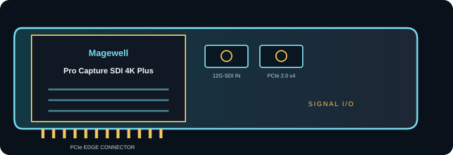

[ INDIVIDUAL COMPONENT // EXPANSION CARDS ]
Magewell Pro Capture SDI 4K Plus
Single-channel 12G-SDI PCIe capture card for 4K/UltraHD production and ingest. This is a model-specific reference; verify the board revision and full specifications against the official sources before installation.

IDENTIFICATION: Match the silkscreen/model marking, part number, board revision and bracket to manufacturer documentation. Port direction, supported formats and driver behavior can vary by model revision and software release.
Capture, playback and compatibility specifications
| Exact model | Pro Capture SDI 4K Plus |
|---|---|
| Bus / host interface | PCI Express 2.0 x4 card; provide four usable PCIe lanes and a host/storage path sized for uncompressed 4K capture. |
| Capture / playback interface | One 12G-SDI BNC input with multi-rate SDI operation for lower-rate signals; capture-only. Confirm embedded audio and reference routing in the selected driver/software setup. |
| Resolution and frame-rate envelope | SD/HD/2K/4K/UltraHD, including up to 4096×2160 at 60 frames/s for supported 12G-SDI timings. Lower-rate 1.5G/3G/6G signals are supported within the input format table. |
| Pixel format and codec handling | The card exposes supported uncompressed video frames (8/10-bit YUV/RGB combinations depend on signal and driver). It does not provide standalone compressed file encoding; host capture software selects ProRes, DNx, H.264 or other codec. |
| Host compatibility | Magewell driver/SDK and compatible capture software are required; consult current Windows/Linux/macOS driver support and application API details on the manufacturer download page. |
| Limitations and installation checks | One SDI input only; no SDI playback. 4K60 capture needs a conforming 12G-SDI source, rated 75-ohm cabling and sufficient host/storage throughput. Do not infer 12G support from a 3G source or use an incompatible format mapping. |
Integration notes and limitations
- Measure available PCIe lanes and sustained host/storage bandwidth; mechanical slot length alone does not guarantee the electrical link width needed by the card.
- Confirm that source timing, signal standard, cable, reference, pixel format, channel mapping and software configuration agree before recording or playback.
- Record driver/firmware versions, operating system, application, breakout/accessory part numbers and tested mode. Update only with a recovery plan for mission-critical rigs.
- One SDI input only; no SDI playback. 4K60 capture needs a conforming 12G-SDI source, rated 75-ohm cabling and sufficient host/storage throughput. Do not infer 12G support from a 3G source or use an incompatible format mapping.
For codec planning, distinguish a video transport/interface and raw pixel format from a compressed media-file codec. A supported capture application may encode a file format that the card itself does not encode.
Manufacturer sources and support
- Magewell — Pro Capture SDI 4K Plus manufacturer technical/product informationProduct-line technical reference; consult the exact model format and interface table for the required mode.
- Magewell — Magewell driver and SDK downloadsOfficial support, driver or release-note resource; operating-system and software compatibility can change by release.
Manufacturer documentation for the precise hardware revision takes precedence over generic workflow or family-level guidance.